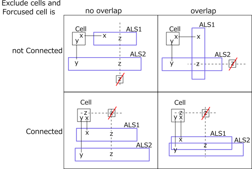
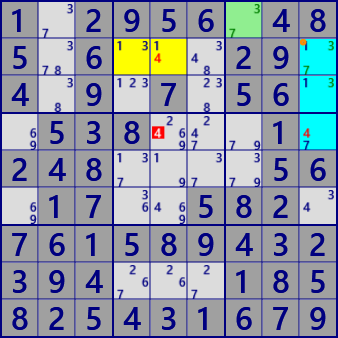
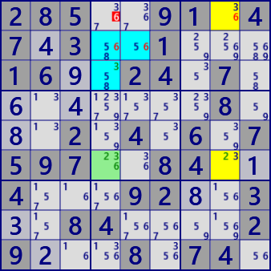
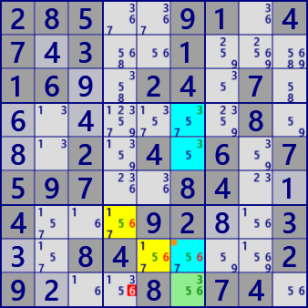

●ALS DeathBlossom(発展形)
DeathBlossomは、妖しげな名前をもつ ALSの配置に基づく解析アルゴリズムです。
ここではALS DeathBlossomの発展形のアルゴリズムを解説します。前提として、
・XYZ-Wing
・ALS DeathBlossom(基本形)
を理解してください。
□XYZ-Wingは、軸セルと複数のBivalueCell(候補数字が2個のセル)の構成です。
これらとは別の除外候補となるセルがあってこれが真のとき、軸セルとBivalueCelから候補数字が除外され、軸セルの候補数字がなくなるアルゴリズムです。
このとき”除外候補となるセル・数字と軸セルに弱いリンク”があります。BivalueCellは1セルのALSです。
そこでBivalueCellをALSに置き換えることができて、XYZ-WingALSアルゴリズムに拡張できます。
BivalueCellを置き換えたALS群には重なりがないとします。
□ALS DeathBlossom(基本形)は、1つの軸セルとALS群の構成です。
ALS DeathBlossom(基本形)では、ALS群には重なりがある場合とない場合があります。
除外候補となるセルと軸セル間には弱いリンクはありません。
□XYZ-WingとALS DeathBlossomの構成は非常に似ています。ここで動いている論理はほとんど同じです。
ただ、”ALS群の重なりの有無”と”除外候補となるセルと軸セル間の弱いリンクの有無”が異なります。
そこで、これらを組み合わせたDeathBlossomの発展形を定義します。
除外候補となるセルと軸セル間に弱いリンクがある場合には、軸セルの数字数に対しALSが1個少なくなります。
したがって、軸セルがBivaluseで1つのALSとの組み合わせのDeathBlossomもあります。

ALS DeathBlossomの例です。
 ALS Death Blossom
ALS Death BlossomStem : r2c3 #69
-#6-ALS1 : r27c7 #567
-#9-ALS2 : r12368c2 #345679
eliminated : r7c2 #7

ALS Death Blossom [overlap]
Stem : r1c7 #37
-#7-ALS1 : r2c459 #1347
-#3-ALS2 : r234c9 #1347
eliminated : r4c5 #4

ALS Death BlossomEx [Connected]
Stem : r6c4 #236
-#2-ALS1 : r16c8 #236
-#3-ALS2 : r2c45 r3c4 #3568
eliminated : r1c4 #6

ALS Death BlossomEx [Connected,overlap]
Stem : r9c6 #356
-#5-ALS1 : r7c4 r8c56 #1567
-#3-ALS2 : r458c6 #3567
eliminated : r9c4 #6
...8...4....21...7...7.5981315..9..8.8....4....41.83.5..1.82.646.8...1...236.18..
285..91.47.3..1...16..24.7........8...2.4.6.7597..84..4...92..3..84....29...8.74.
..2956.485.6....9.4...7.5...538...1.2.......6.1...582...1.8...2.9....1.582.4316..
417..35.62.5..7...93..56.7........6...3.9.7.1691..58..3...71..9..98....77...3.21.